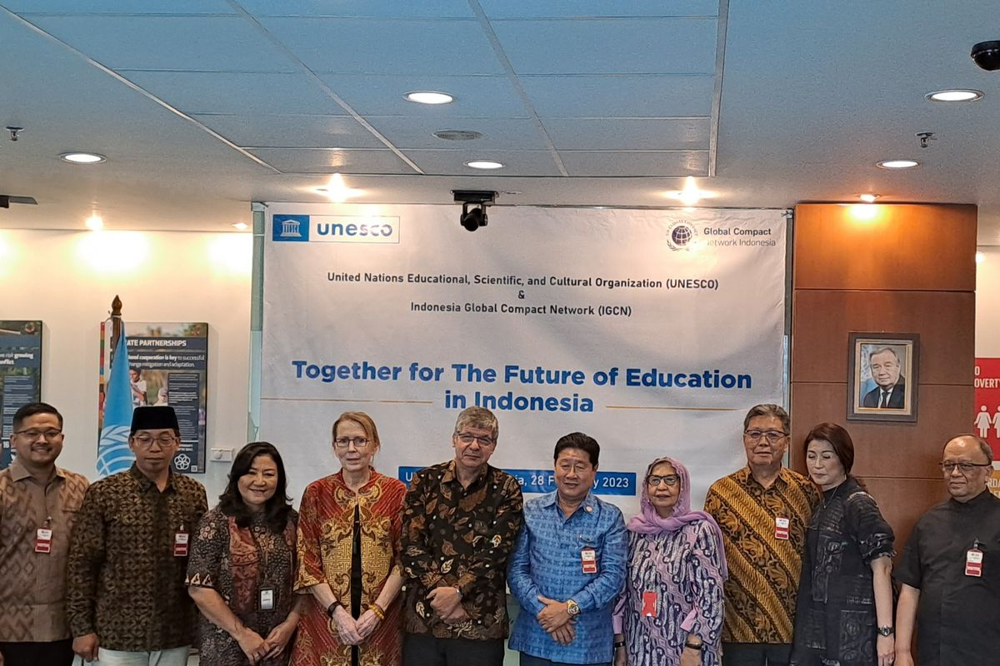
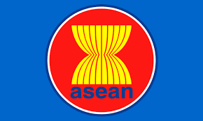

Kerjasama regional adalah kerjasama yang saling menguntungkan dan melibatkan suatu negara yang saling berdekatan letak geografisnya untuk mencapai tujuan bersama. Kerjasama ini biasanya dilakukan di berbagai bidang seperti, ekonomi, sosial, politik, keamanan, dan budaya. Serta untuk menjaga keharmonisan antar negara dan meningkatkan ekonomi suatu negara. Contoh kerjasama regional adalah ASEAN, APEC, dan Uni Eropa.
 Selain itu, Indonesia juga berperan aktif dalam berbagai kerjasama regional di ASEAN untuk mencapai tujuan pembangunan berkelanjutan (SDGs) ke-4, yaitu Pendidikan yang Berkualitas. Pendidikan yang inklusif dan berkualitas merupakan kunci pembangunan berkelanjutan di kawasan ASEAN, karena berperan sebagai kekuatan transformatif yang mendorong kemajuan sosial-ekonomi. Pendidikan tidak hanya mempersiapkan sumber daya manusia yang tangguh dan kompetitif untuk menghadapi masa depan, tetapi juga meningkatkan kesadaran akan identitas kawasan. Oleh karena itu, Indonesia hadir untuk membantu ASEAN menyusun agenda prioritas pendidikan regional. Indonesia berperan untuk mendorong isu-isu spesifik seperti, pendidikan vokasi, literasi digital, dan kesetaraan akses pendidikan, yang sejalan dengan target SDGs 4 (Pendidikan yang Berkualitas). Beberapa hal nyata yang sudah berhasil dilakukan adalah pertukaran pelajar antar negara, transisi siswa ke dunia kerja melalui pengalaman magang dan beasiswa. Serta, peningkatan kapasitas guru, serta advokasi untuk menjangkau anak putus sekolah dan memastikan lingkungan sekolah yang aman dan tangguh.
dan Berdampak Bagi Sesama!✨🤝🎯